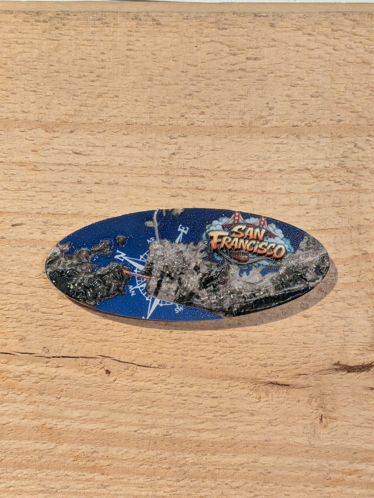

San Francisco
Live Weather · AR Experience
Tap below to start
TAP TO START AR
Point camera at your SF magnet
⬡ Image tracking active
San Francisco, CA
--°
Loading weather...
🌫
Feels
--°
Humidity
--%
Wind
--
Vis
--